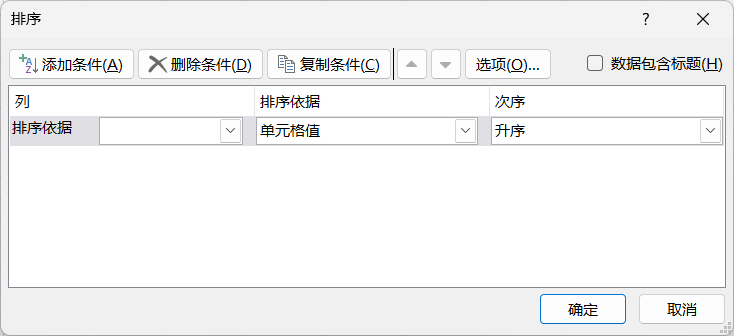
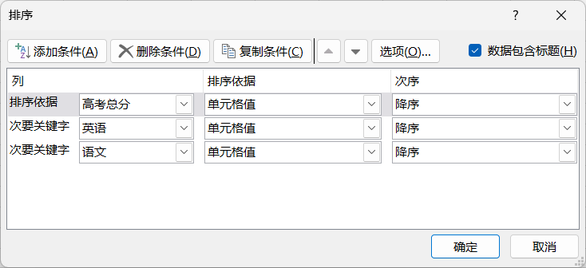
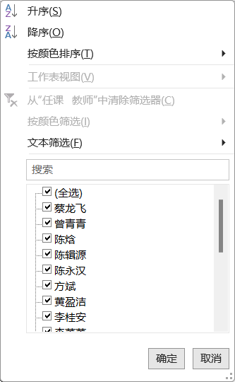
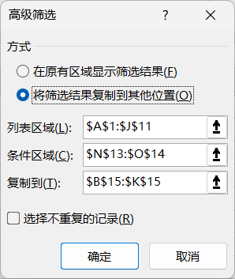
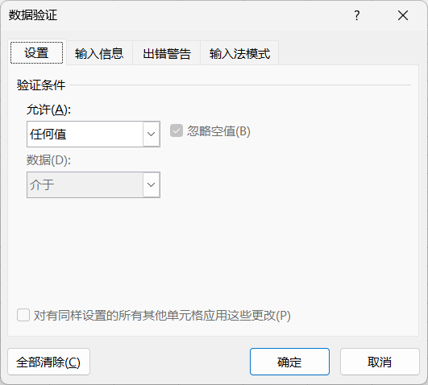
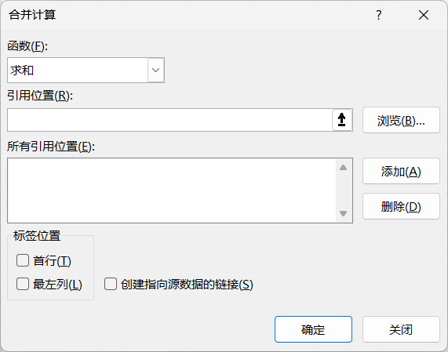

数据
Data
获取和转换数据
查询和连接
排序和筛选
- . 在"开始"选项卡→"编辑"组，也提供有排序和筛选
- 排序
- . 排序时，只需定位在某个单元格就好，即：以当前单元格的数值为依据，对整个工作表排序；如果选择了单元格区域，将只会对该区域的数据排序，结果会影响到数据之间的联系
- . 可指定多重排序
- . 除了基本的排序功能外，还可以利用"排序"删除工作表中多余的空行
-
默认排序依据 分类 规则 文本 首字母拼音顺序 数字 数值大小，从小到大 日期 时间从早到晚 逻辑 假False、真True在后面 空白单元格 无论升序、降序都在最后 -
 排序  多重排序 - 利用辅助列删除空白行
-
利用填充|拖拉，在原数据区域最后一列创建数字1-N的辅助列，不需要指定标题使用数据区域中任意一个关键字升序排序，空白行将集中在底部，全选并删除再根据辅助列升序排序，恢复原来数据的顺序删除辅助列
- 筛选
- . 筛选是针对有标题栏的工作表
- . 筛选的同时，可以排序
- . 针对数值类的数据，还可以进一步筛选
- . 还可以根据指定的条件区域进行更为复杂的筛选
-
 普通筛选 数字筛选 高级筛选  -
TipsCTRL + T：创建超级表，操作更方便
数据工具
- 分列
- 将单列数据拆分为多列；如将姓名字段拆分为姓和名两列
- 数据验证
- 对工作表的编辑进行约定
- 合并计算
- 合并计算多个工作表，如求全年生成总量
-
 数据验证  合并计算
分级显示
- 组合
- 分类汇总
- . 先排序后汇总